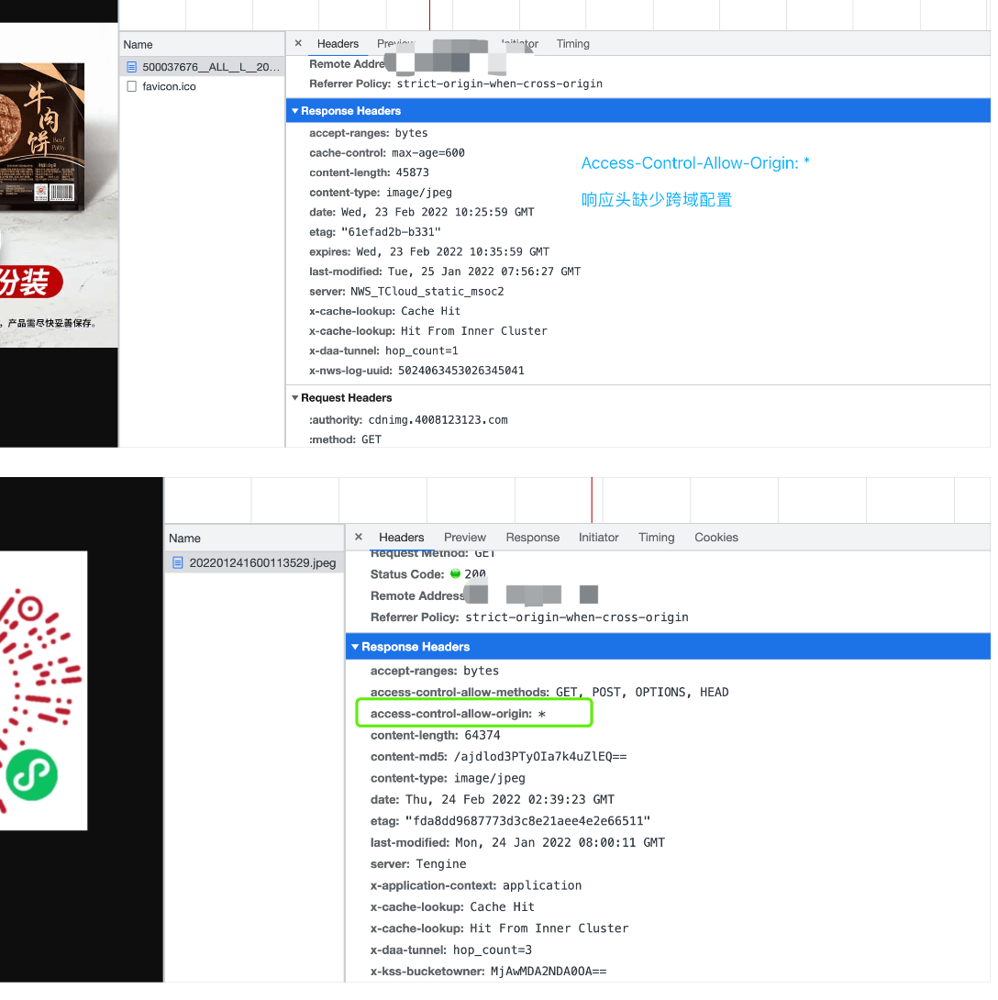

绘制海报
对于小程序的分享，目前来说就是三种方法：
一个是点击小程序的卡片分享链接，
一个是通过生成小程序短码，
一种是通过微信扫小程序的太阳码进入。
小程序卡片分享只能在微信私聊和群聊中使用，相对会受限一些。
小程序短码后台生成的有临时和永久两种。临时有效期只有 30 天，永久则是个数上会受到限制(10w 个)。短码目前不是一个很好的方案。
小程序短码还有一种途径是安卓手机通过小程序右上角胶囊按钮的菜单复制链接也可以拿到，不过文档未说明该功能，不确定是临时还是永久的。
而小程序分享朋友圈的功能暂时还未开放。
（据说安卓用户内测一段时间，不过限制很多）
所以想要在朋友圈传播开来，
目前大家的解决方案基本都是会在朋友圈发海报的形式来引流小程序。
那么小程序生成海报的功能就显得必不可缺，
不过想要实现这个功能，其中隐藏的坑也不老少。
踩坑
- 模拟器、真机调试模式正常，关闭调试模式保存图片白屏。
一般一旦遇到调试模式正常，关闭调试就不正常的情况，
第一直觉就是需要看一下小程序后台的开发设置，
我们需要绘制的图片或者请求的接口，是否在合法域名的白名单内。
80%都是忘记配置域名导致的这类问题。
PS：其实如果模拟器不勾选不校验合法域名、web-view（业务域名）、TLS版本以及HTTPS证书这一项，也会复现这个问题，只不过这一项习惯性的常年勾选而发现不了。
- 个别安卓机，海报绘制可以绘制出来，个别图片绘制不出来，开启调试模式就没问题。IOS 机型不开调试模式也没问题。
首先跟问题 1 一样，校验域名是否在合法域名内。
不过 ios 机型没问题，应该不是后台配置的问题。
这个问题纠结了很久，
最后请教组内前端大佬帮忙解决。
有些图片资源服务器的 ng 没有配置跨域字段。（=。=！~）
沟通到运维大哥，经过一番邮件协调，同意将跨域字段添加。
中间由于资源服务器可能很多台，运维大哥可能只加几个服务器。中途又实锤几个 IP 忘记加跨域字段了。最终全部加上之后，这个问题得以解决。
PS：前端大佬说，也可以尝试不直接通过 url 把图片绘制到 canvas 上，而是把图片下载之后，转成 Base64，再将 Base64 绘制到 canvas，应该就会回避跨域的问题。不过只是理论猜想，不知道会不会有隐藏坑。由于项目上线时间紧张就没敢乱尝试。
